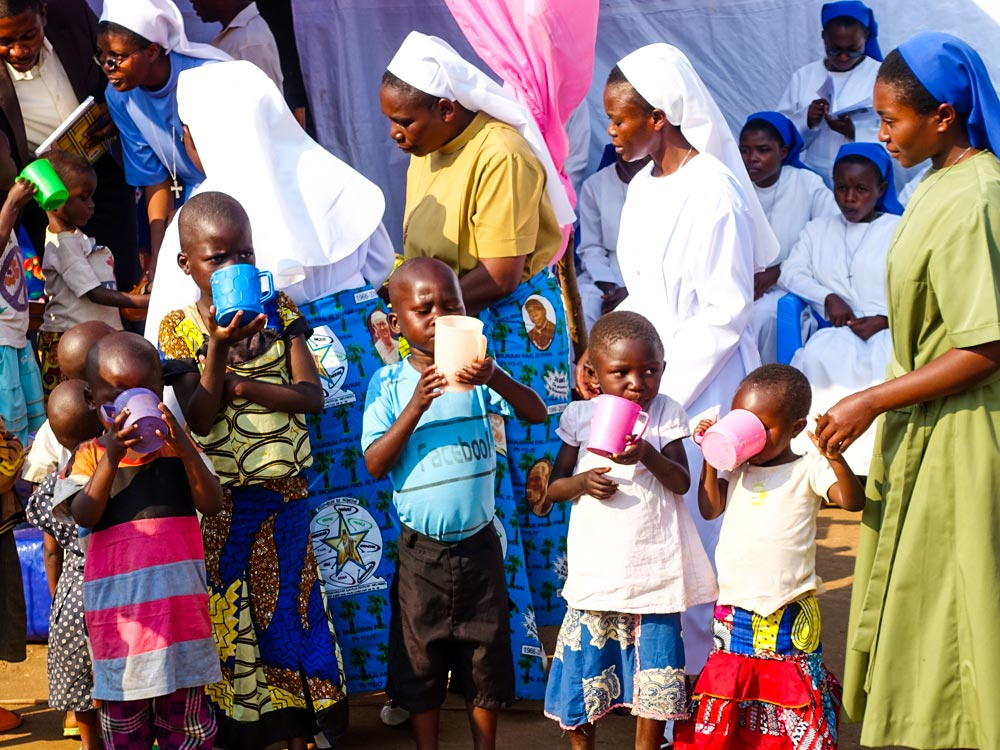
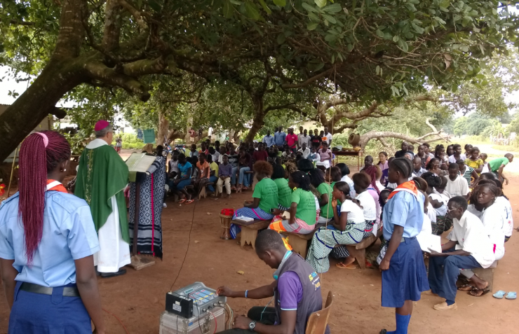

Missões na África
A missão da Igreja Católica na África é vasta e complexa, abrangendo a evangelização, o desenvolvimento humano integral e a assistência às comunidades mais vulneráveis. A Igreja Católica tem uma presença significativa no continente africano, com uma história que remonta a séculos, e continua a desempenhar um papel importante no desenvolvimento social, econômico e espiritual. 
Missionários brasileiros levam fé e serviços sociais a país africano que não tem nem energia elétrica
Ianabu é uma garotinha de dois anos que vive na Guiné-Bissau, país que segundo a ONU tem o 15º menor PIB per capita no mundo. Nessa ex-colônia portuguesa na costa ocidental da África, não há energia elétrica, nem estabilidade política, e por isso a indústria, os empregos e o comércio exterior são limitados. A família de Ianabu, muçulmana, vive como boa parte das famílias do país, em uma casa de blocos de barro coberta por palha, fazendo apenas uma refeição por dia, no meio da tarde – uma panela de arroz empapado. Leia a matéria completa em: Sempre Familia
Voluntariado
Ser voluntário significa dedicar parte do seu tempo, sem receber remuneração, para realizar atividades que beneficiam outras pessoas, comunidades ou causas. Essa prática é impulsionada pelo desejo de contribuir para o bem-estar coletivo e promover mudanças positivas na sociedade.
O Papa Francisco recorda na intenção de oração para o mês de dezembro as organizações de voluntariado, atores-chave na sociedade devido ao seu compromisso na promoção humana e no bem comum.
"O mundo precisa de voluntários e de organizações que queiram comprometer-se com o bem comum. Sim, essa é a palavra que muitos hoje em dia querem apagar: 'compromisso'. E o mundo precisa de voluntários comprometidos com o bem comum", destaca o Pontífice na mensagem de vídeo, divulgada nesta quinta-feira (1°/12).
O Vídeo do Papa deste mês mostra os voluntários ao lado das vítimas de catástrofes naturais, dos pobres que sofrem as consequências da crise econômica, de crianças desnutridas, refugiados em fuga por causa da guerra, jovens e mulheres à procura de trabalho.
De acordo com Francisco, "o trabalho das organizações voluntárias é muito mais eficaz quando elas colaboram entre si e também com os Estados. Trabalhando em conjunto, apesar dos poucos recursos que possam ter, dão o seu melhor e fazem do milagre da multiplicação da esperança uma realidade. Precisamos tanto multiplicar a esperança"!
Rezemos para que as organizações de voluntariado e de promoção humana encontrem pessoas dispostas a comprometer-se com o bem comum e a buscar novas formas de colaboração a nível internacional.
Este apelo do Santo Padre destaca o trabalho de milhões de organizações e associações voluntárias em todo o mundo, a maioria delas frequentemente sem visibilidade ou estatuto legal.